Durante mucho tiempo, la «Muerte Roja» había devastado la región. Jamás pestilencia alguna fue tan fatal y espantosa. Su avatar era la sangre, el color y el horror de la sangre. Se producían agudos dolores, un súbito desvanecimiento y, después, un abundante sangrar por los poros y la disolución del ser. Las manchas purpúreas por el cuerpo, y especialmente por el rostro de la víctima, desechaban a ésta de la Humanidad y la cerraban a todo socorro y a toda compasión.
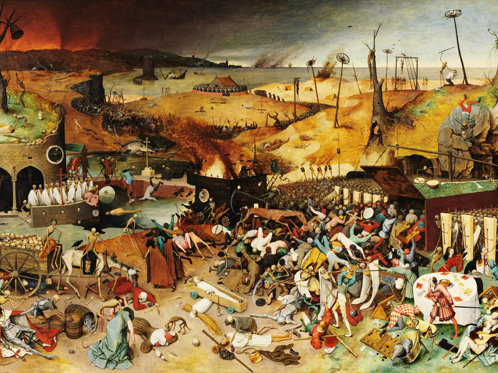Pero el príncipe Próspero era feliz, intrépido y sagaz. Cuando sus dominios perdieron la mitad de su población, reunió a un millar de amigos fuertes y de corazón alegre, elegidos entre los caballeros y las damas de su corte, y con ellos constituyó un refugio recóndito en una de sus abadías fortificadas. Rodeábala un fuerte y elevado muro, con sus correspondientes puertas de hierro.
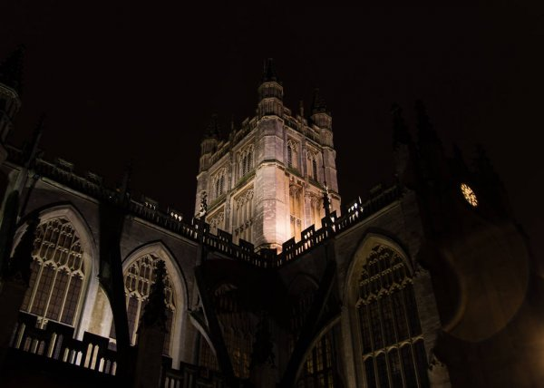Ocurrió a fines del quinto o sexto mes de su retiro, mientras la plaga hacía grandes estragos afuera, cuando el príncipe Próspero proporcionó a su millar de amigos un baile de máscaras de la más insólita magnificencia.
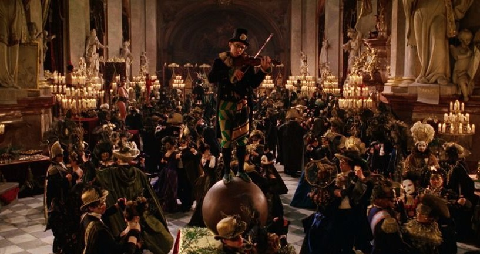Permítaseme describir los salones donde tuvo efecto. Eran siete, en una hilera imperial. Las salas estaban dispuestas de modo tan irregular que la mirada solamente podía alcanzar una cada vez. Cada ventanal estaba hecho de vidrios de colores que armonizaban con el tono dominante de la decoración del salón para el cual se abría. El que ocupaba el extremo oriental, por ejemplo, estaba decorado en azul, y los ventanales eran de un azul vivo. El segundo, púrpura, el tercero, verde, el cuarto, anaranjado, el quinto, blanco, y el sexto, violeta.
El séptimo salón estaba rigurosamente forrado por colgaduras de terciopelo negro, que revestían todo el techo y las paredes y caían sobre un tapiz de la misma tela y del mismo color. Pero solamente en este aposento el color de las vidrieras no correspondía al del decorado. Los ventanales eran escarlata, de un intenso color de sangre.
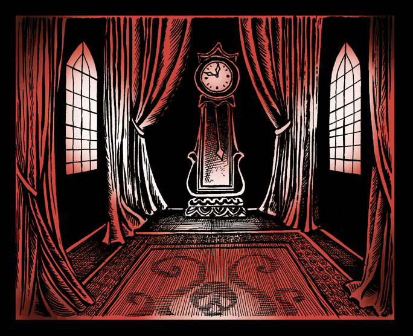Ahora bien: no veíase lámpara ni candelabro alguno en estos siete salones. Pero en los corredores que la rodeaban, exactamente enfrente de cada ventana, levantábase un enorme trípode con un brasero resplandeciente que proyectaba su claridad a través de los cristales coloreados e iluminaba la sala de un modo deslumbrante.

Pero en el salón de poniente, en la cámara negra, la claridad del brasero, que se reflejaba sobre las negras tapicerías a través de los cristales sangrientos, era terriblemente siniestra y muy pocos bailarines tenían valor para pisar su mágico recinto. También en este salón erguíase, apoyado contra el muro de poniente, un gigantesco reloj de ébano. Cuando iba a sonar la hora, salía de los pulmones de bronce de la máquina un sonido claro, estrepitoso, profundo y extraordinariamente musical. Los músicos de la orquesta veíanse obligados a interrumpir un instante sus acordes para escuchar el sonido.
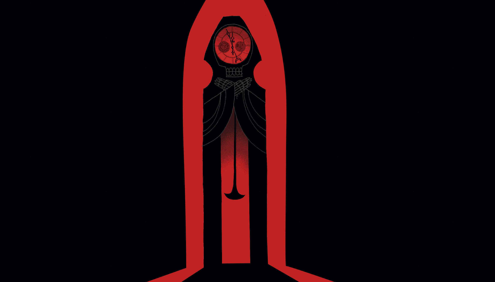Delirantes fantasías, atavíos como de loco. Había mucho de lo bello, mucho de lo licencioso, mucho de lo bizarre, algo de lo terrible y no poco de lo que podría haber producido repugnancia. De un lado a otro de las siete salas pavoneábase una muchedumbre de pesadilla.
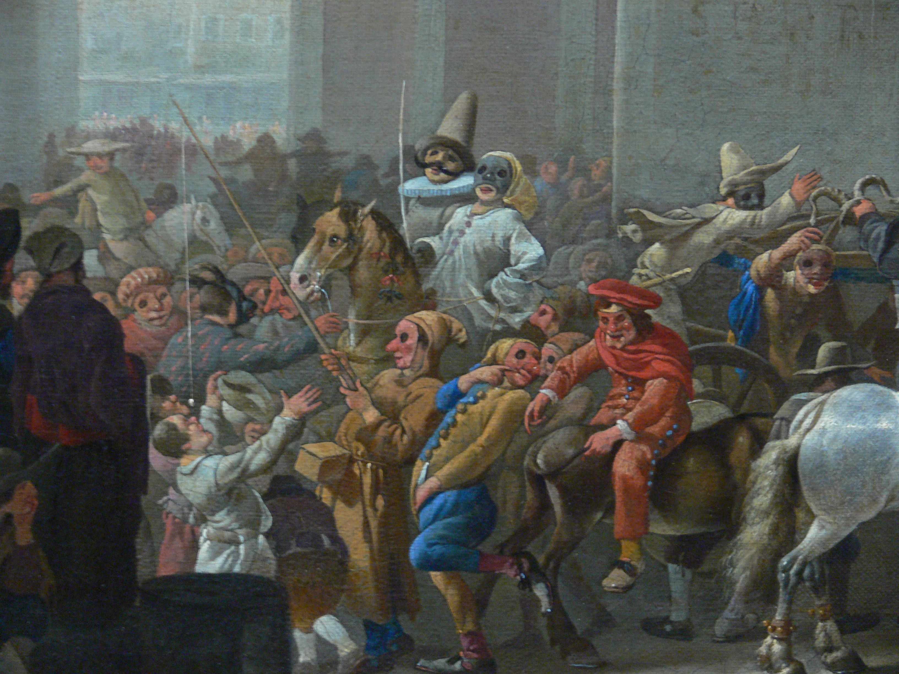Varias personas entre aquella muchedumbre, antes que se hubiesen ahogado en el silencio los postreros ecos de la última campanada, habían tenido tiempo para darse cuenta de la presencia de una figura enmascarada. Y al difundirse en un susurro el rumor de aquella nueva intrusión, se suscitó entre todos los concurrentes un cuchicheo o murmullo significativo de asombro y desaprobación. Y luego, finalmente, el terror, el pavor y el asco.
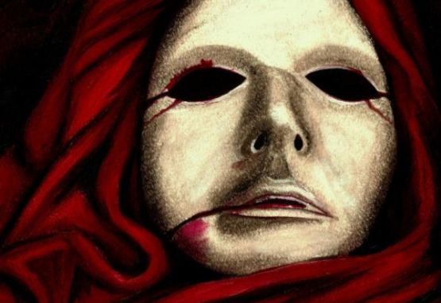Toda la concurrencia pareció entonces sentir profundamente lo inadecuado del traje y de las maneras del desconocido. El personaje era alto y delgado, y estaba envuelto en un sudario que lo cubría de la cabeza a los pies. La máscara que ocultaba su rostro representaba tan admirablemente la rígida fisonomía de un cadáver. La máscara había llegado hasta el punto de adoptar el tipo de la «Muerte Roja». Sus vestiduras estaban manchadas de sangre.
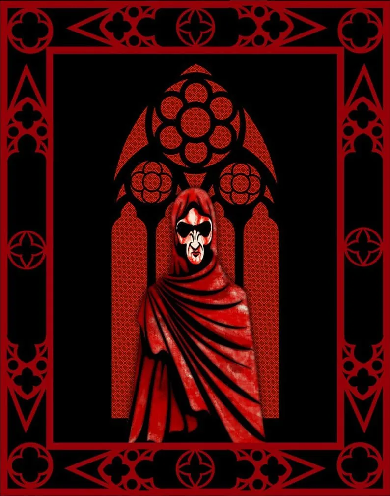Cuando los ojos del príncipe Próspero se fijaron en aquella figura espectral, se le vio, en el primer momento, conmoverse por un violento estremecimiento de terror y de asco. Pero, un segundo después, su frente enrojeció de ira. —¿Quién se atreve —preguntó con voz ronca a los cortesanos que se hallaban junto a él—, quién se atreve a insultarnos con esta burla blasfema? ¡Apoderaos de él y desenmascararse, para que sepamos a quién hemos de ahorcar en nuestras almenas al salir el sol!.
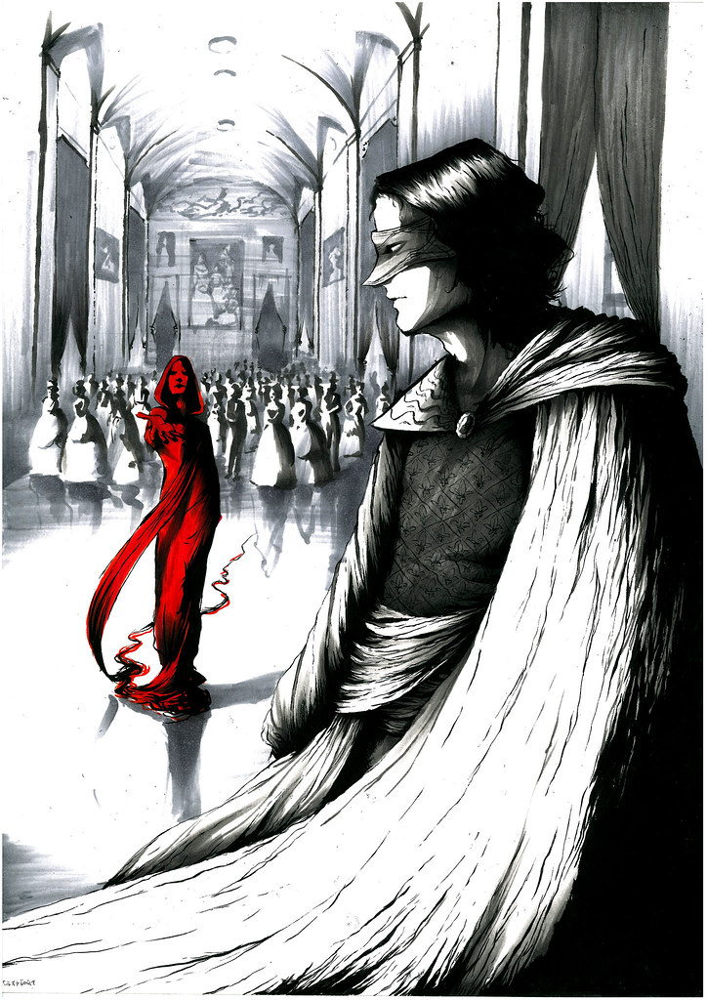Pero por cierto terror indefinido, que la insensata arrogancia del enmascarado había inspirado a toda la concurrencia, nadie hubo que pusiera mano en él para prenderle.
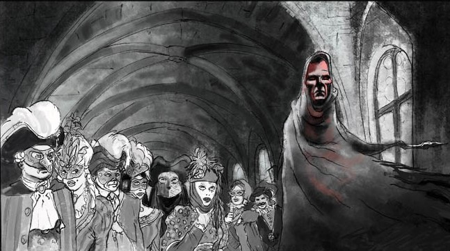Sin embargo, fue entonces cuando el príncipe Próspero, exasperado de ira y vergüenza por su momentánea cobardía, se lanzó precipitadamente a través de las seis cámaras. Blandía un puñal desenvainado, Sonó un agudo grito y la daga cayó relampagueante sobre la fúnebre alfombra, en la cual, acto seguido, se desplomó, muerto, el príncipe Próspero.
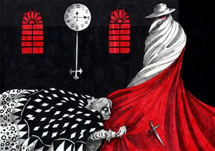Entonces, un tropel de máscaras se precipitó a un tiempo en la negra estancia, y agarrando al desconocido, exhalaron un grito de terror inexpresable, viendo que bajo el sudario y la máscara de cadáver que habían aferrado con energía tan violenta no se hallaba forma tangible alguna.
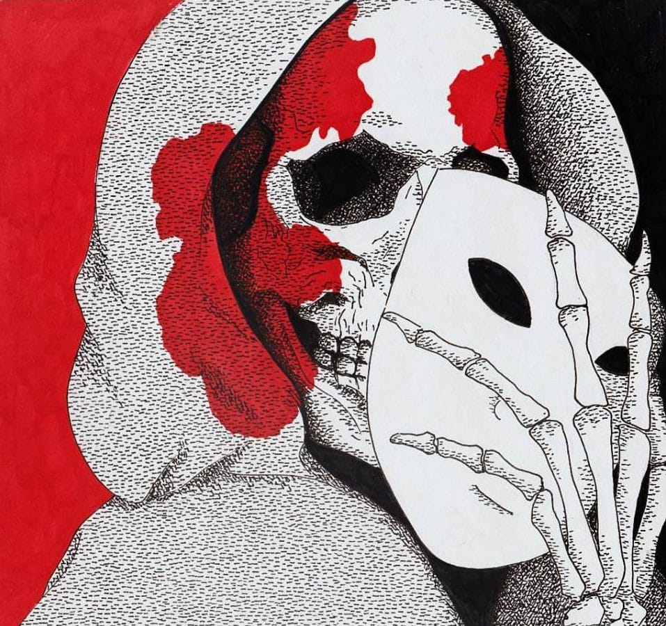Y, entonces, reconocieron la presencia de la «Muerte Roja», Había llegado como un ladrón en la noche, y, uno por uno, cayeron los alegres libertinos por las salas de la orgía, inundados de un rocío sangriento. Y cada uno murió en la desesperada postura de su caída.
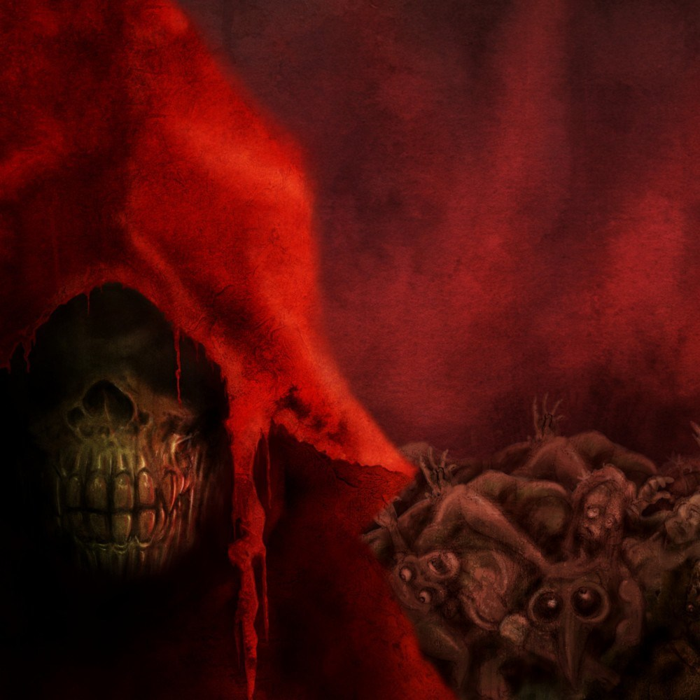